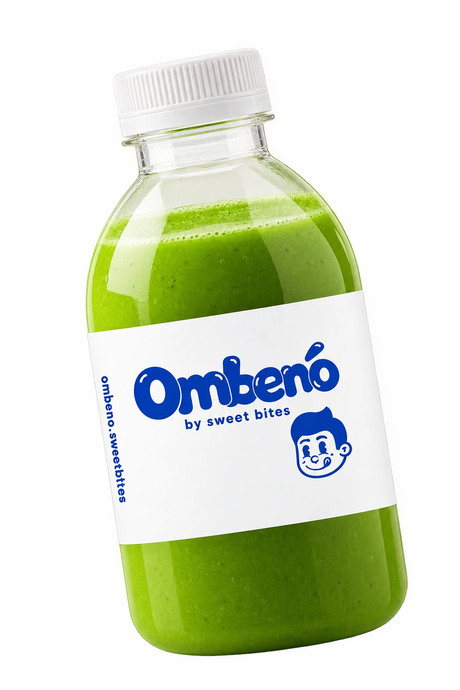

OMBENO Green Tea hadir sebagai jawaban bagi Anda yang mendambakan minuman teh hijau autentik dengan cita rasa segar yang menenangkan. Sebagai sub-brand minuman resmi dari Sweetbites, OMBENO berkomitmen untuk menghadirkan kualitas terbaik dalam setiap botolnya. Green Tea kami diracik dari daun teh hijau pilihan yang dipetik dari perkebunan dataran tinggi, kemudian diproses dengan metode pengolahan yang tepat untuk menjaga kandungan antioksidan alami serta menghasilkan warna hijau bening keemasan yang khas. Kami menambahkan sentuhan susu segar dan krimer spesial dengan takaran presisi, menciptakan tekstur minuman yang lembut, ringan, dan sangat menyegarkan di lidah. Rasanya yang manis lembut dengan sedikit nuansa earthy langsung memberikan efek relaksasi, menjadikannya minuman yang sempurna untuk menemani hari-hari sibuk Anda, baik saat bekerja, belajar, maupun sekadar bersantai di rumah.
Keunggulan lain dari OMBENO Green Tea adalah kepraktisannya. Dikemas dalam botol plastik food-grade yang tebal dan aman, minuman ini dirancang agar mudah dibawa ke mana saja tanpa khawatir tumpah. Kami menyediakan berbagai pilihan ukuran yang fleksibel, mulai dari ukuran 230 ml yang pas untuk konsumsi pribadi, 500 ml untuk menemani waktu santai, hingga ukuran 1 Liter yang cocok untuk dinikmati bersama keluarga atau teman. Proses pengemasan dilakukan secara higienis dan menggunakan sistem pendingin yang baik, sehingga kesegaran Green Tea OMBENO tetap terjaga saat Anda menerimanya. Minuman ini juga sangat cocok dijadikan sebagai teman makan camilan atau dessert, karena mampu menetralisir rasa manis yang berlebihan dan memberikan sensasi segar di tenggorokan.
Bagi Anda yang ingin merasakan pengalaman kuliner yang lengkap, OMBENO Green Tea adalah pasangan yang sempurna untuk dessert dari brand utama kami, Sweetbites. Kami sangat merekomendasikan Anda untuk mencoba memadukan minuman ini dengan varian Tiramisu Cheese yang legendaris. Perpaduan antara gurihnya cheese dan pahitnya kopi dari tiramisu, disandingkan dengan segar dan lembutnya Green Tea, akan menciptakan harmoni rasa yang luar biasa. Nikmati setiap tetes kesegaran OMBENO Green Tea yang dibuat dengan penuh dedikasi. Pesan sekarang melalui tombol di bawah ini dan rasakan sendiri kenikmatan teh hijau premium yang sesungguhnya. OMBENO, teman minum terbaik untuk setiap momen manis Anda!